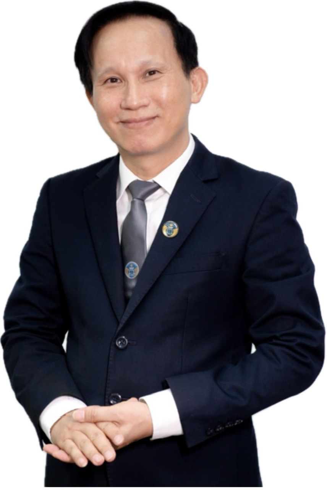

Về Nguyễn Yến
Hơn bốn thập kỷ với pháp luật, và hành trình tiếp tục học hỏi để sẻ chia giá trị trong nửa sau cuộc đời.
Từ nghề luật đến tri thức cộng đồng
Tôi là Nguyễn Yến. Tôi có 33 năm công tác trong ngành Kiểm sát và hơn 10 năm hành nghề luật sư.
Hơn 40 năm làm việc với hồ sơ, pháp luật và con người đã rèn cho tôi cách nhìn vấn đề từ nhiều phía: thu thập thông tin, nghiên cứu, phân tích, kiểm chứng rồi mới đưa ra nhận định.
Đó là nền tảng tôi tiếp tục phát huy khi học AI, xây dựng hệ thống tri thức cá nhân và chia sẻ kiến thức chăm sóc sức khỏe chủ động.
Tôi mong hành trình học tập của mình truyền cảm hứng để người trưởng thành và người lớn tuổi thấy rằng: học thêm một điều mới vẫn luôn có ý nghĩa.
Những điều tôi mang theo
Kinh nghiệm nghề nghiệp không khép lại khi chuyển sang một lĩnh vực mới.
Tư duy phân tích
Nhìn rõ vấn đề, xác định thông tin còn thiếu và tìm căn cứ trước khi kết luận.
Trách nhiệm với con người
Lắng nghe hoàn cảnh thực tế, giải thích rõ ràng và tôn trọng lựa chọn của mỗi người.
Khả năng hệ thống hóa
Biến kinh nghiệm thành bài học, bài học thành tài liệu có thể lưu giữ, dùng lại và chia sẻ.
Góc nhìn của đồng nghiệp

“Luật sư Nguyễn Yến là một trong số rất ít các luật sư đổi vai từ vai trò buộc tội sang vai trò gỡ tội hết sức mềm mại và nhân văn.”Luật sư Hoàng Văn Hướng
Trưởng Văn phòng Luật sư Hoàng Hưng, Đoàn Luật sư thành phố Hà Nội
Ba con đường, một triết lý
Hiểu luật để an tâm
Chia sẻ kiến thức pháp luật gần đời sống và đề cao sự chủ động, phòng ngừa tranh chấp.
Xem nội dung →Hiểu sức khỏe để chủ động
Tập trung vào lối sống và giáo dục sức khỏe, tôn trọng y học điều trị.
Xem nội dung →Hiểu AI để thích nghi
Học công cụ mới bằng cách đơn giản và phát huy kinh nghiệm đã tích lũy.
Xem nội dung →